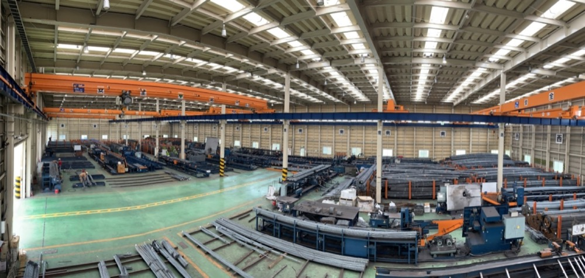
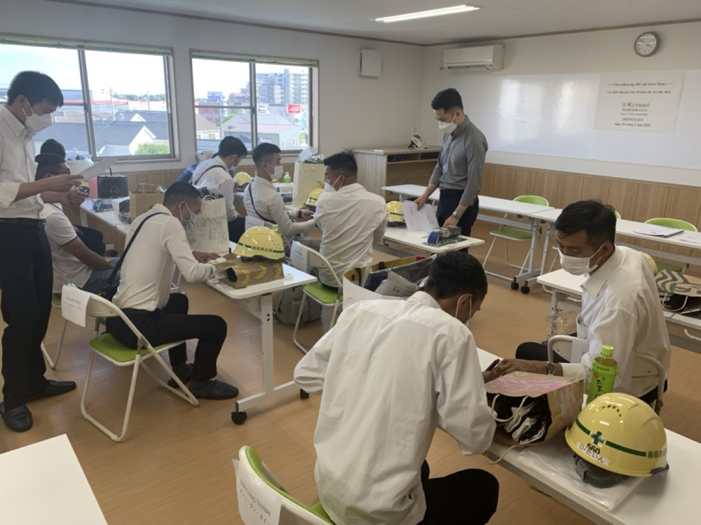
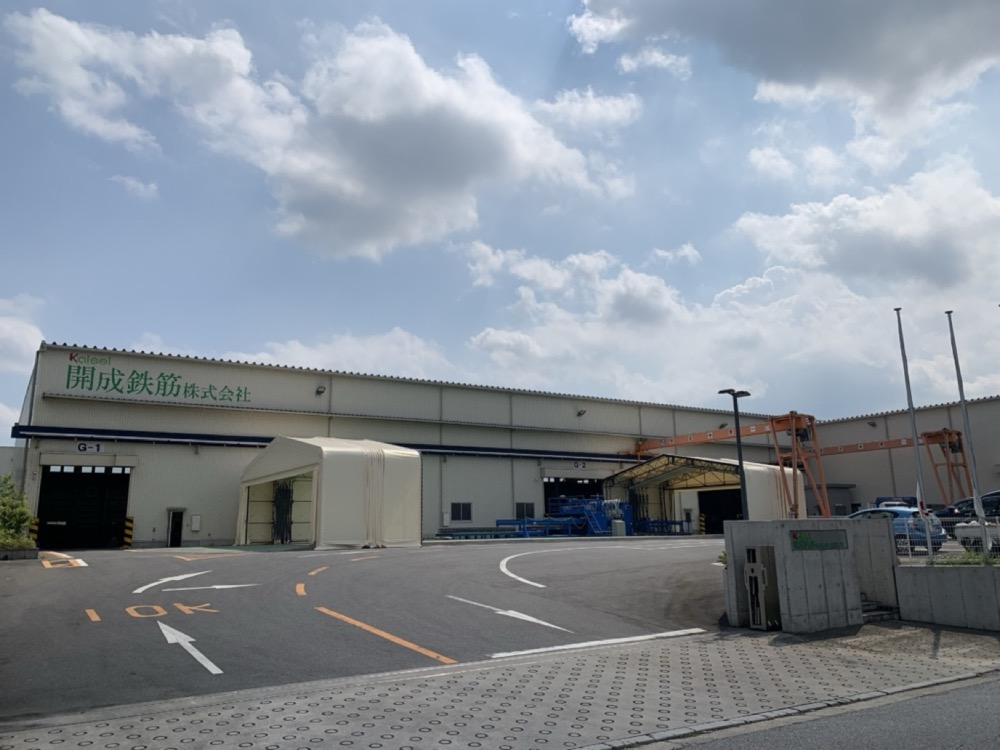

日本の礎を創る会社
藪 建次Kenji Yabu
開成鉄筋株式会社 専務取締役
千葉県佐倉市生まれ。帝京平成大学卒。2005年開成鉄筋入社、現場見習いを経て2年目で職長に抜擢。2015年課長、2021年部長を歴任し、2023年に専務取締役に就任。工程管理と若手育成で組織を牽引し、週休3日制やSDGs導入などの働き方改革の推進を目指している。
企業サイトを見るTRACK 01
日本の礎を創る会社

鉄筋工事とは建物の心臓部を構築することであり、完成してしまうと目には見えないが、その建造物の最も重要な部分を担う。鉄筋がなければ、私たちの社会は成立しないとも言い切れるだろう。都市という集合体は、鉄筋が生み出した現代文明の結晶とも言える。
鉄筋加工・組立から圧接工事、積算、施工図作成までを一気通貫で担い、千葉をはじめとした関東各地に、開成鉄筋株式会社は鋼の血管を這わせ続けてきた。現場で汗を噴き上げる作業員たちの背後に、ひときわ静かな焔のように立つ男がいる。専務取締役・薮建次。開成鉄筋の中枢を支える人物だ。
TRACK 02
受けた恩は忘れない

1982年に創業した開成鉄筋。1998年には、長年取引していたゼネコンからの依頼が急遽途絶え、明日の仕事さえ保証されない危機に直面したこともあった。しかし、そのときに手を差し伸べたのは、多くの他社ゼネコン会社、そして開成鉄筋を支え続けてきた仲間たちだったという。彼らのおかげで今があると語る藪。受けた恩は忘れず継がれてゆくのが、開成鉄筋の魅力だ。
そんな藪は千葉県佐倉市出身。子どものころ、社長である父の背中越しに職人たちの笑い声と火花を見て育った。大学卒業後の2005年、入社と同時に修行と称して現場に放り込まれる。初年度は「見習い」、2年目からはいきなり職長になった。工程表と溶接音の間で右も左もわからぬまま指揮を執っていた藪は、深夜の現場事務所でも図面にひたすら目を凝らしていた。悪戦苦闘の入社2年目の混乱こそが、彼の鉄筋道の原点だった。
2015年に課長、2021年に部長、そして2023年に専務取締役に就任。就任後に彼がまず手を付けたのは「若返り」と「働き方改革」であった。現場週休2日制がやっと浸透し始めた業界で、藪は「週休3日」を視野に入れ動き出す。そしてSDGsの一環として成田工場屋上に太陽光パネルを敷き、2024年には自家消費電力の30％の再エネ化を達成した。
